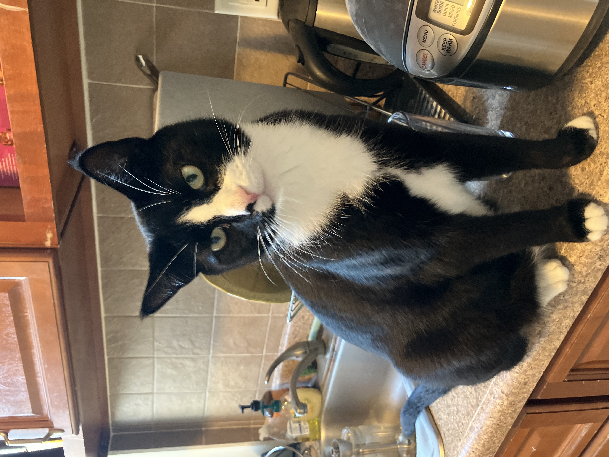

Introduction
Turkey is a black and white tuxedo cat who the pet and companion of Colin O'Connell
Here are some interesting facts about Turkey:
- His favorite food is shredded chicken in gravy
- He likes to run around at night
- He can be quite a handful at times
Hobbies
Here's a table outlining some of Turkey's hobbies and his level of interest:
| Hobby | Interest Level |
|---|---|
| Running around | High |
| Yelling | Intermediate |
| Hunting Mice | Very High |
Favorite Toy
Turkey's favorite toy can be found here
More info on tuxedo cats
Click on the photo of Turkey to learn more about tuxedo cats!
